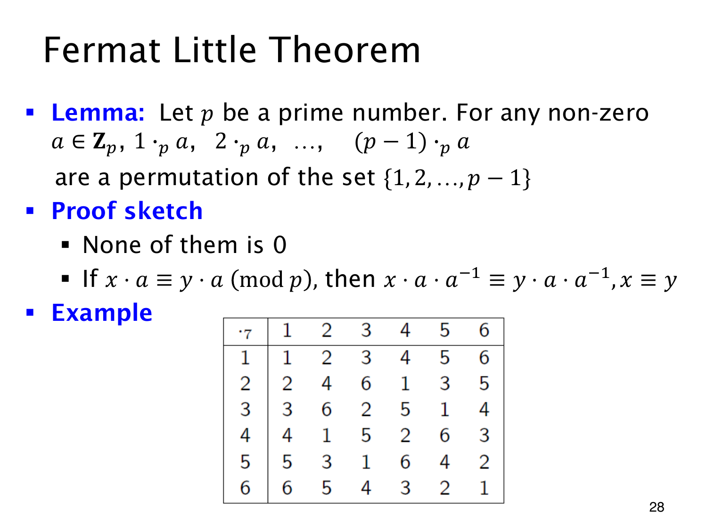

L1.14 · 第 28 页讲解原文
查看这一页课件

乘以非零数后的余数排列
模 7 的乘法表中，乘数为 3 的一行是
3, 6, 2, 5, 1, 4.
它包含 1 到 6 的全部数字，每个恰好出现一次。表中其余各行也一样。这是 Fermat’s Little Theorem（费马小定理）证明要用到的一个引理。
设 p 是素数，a∈Zp 且 a=0，则
amodp, 2amodp,…,(p−1)amodp
构成 1,2,…,p−1 的一个排列。证明需要确认两件事：这些余数没有零，也没有重复。
由于 p 为素数，非零的 a 有逆元。假设某个 ia≡0(modp)，两边乘 a−1，便得到 i≡0(modp)，这与 1≤i<p 矛盾，因此没有零。
再假设 ia≡ja(modp)。同样乘以 a−1，可得 i≡j(modp)。因为 i,j 都在 1 到 p−1 之间，只能有 i=j。所以不同的乘数不会产生相同的余数。共有 p−1 个互不相同的非零余数，恰好把 1 到 p−1 全部用完。
这里用到的素数、非零条件保证了逆元存在。换成模 6 乘 2，结果为 2,4,0,2,4，既出现零，也出现重复，就不再构成排列。